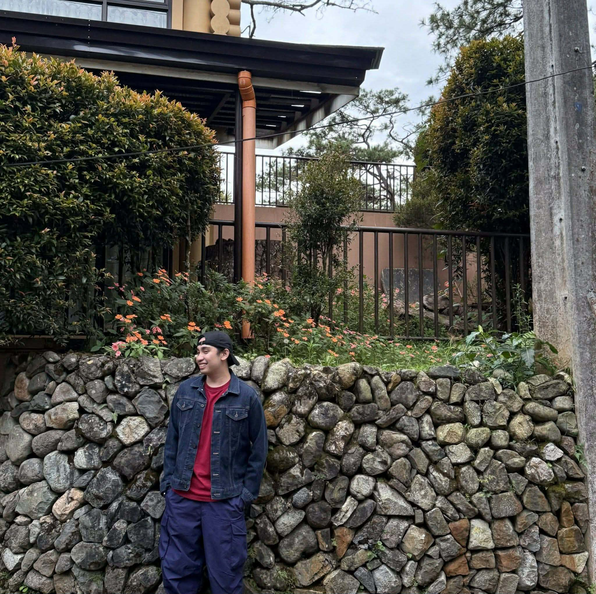

// about
A 4th-year IT student at Holy Angel University with a genuine passion for building the web and crafting great user experiences.

I'm a 4th-year Information Technology student at Holy Angel University with a genuine passion for web development. My journey began with curiosity about how websites actually work — and that curiosity has turned into a dedicated craft.
Over the years I've built a strong foundation in HTML, CSS, and JavaScript, with growing experience in responsive design, UI/UX principles, and WordPress. I take pride in writing clean, organized code that's as considered behind the scenes as it looks on screen.
"Good design is good business — and good code is what makes design real."
Beyond the technical side, I'm driven by a strong attention to detail and a commitment to accessibility and user experience. Every project I take on is a chance to push my skills further.
I'm aiming to specialize in modern front-end development — building scalable, performant, and visually compelling web applications, and collaborating with teams that value quality and creativity.
Download Resume (PDF)// education
Holy Angel University · Pampanga, Philippines
A comprehensive program covering web development, programming, database management, and user interface design — with front-end technologies and UI/UX design as primary specializations.
I'm open to internship opportunities, freelance projects, and collaborations.